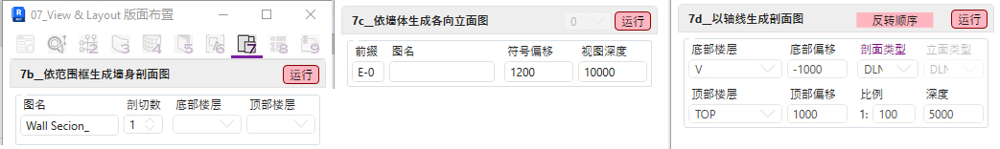

07页签目前已制作四个主要工具:
a. Manage ViewSheet By Views 依视图新建或放入图纸
解决Revit自带图纸工具一次只能放置单张视图的问题
将所选视图放入新建或现有的图纸空间并自动定位排版
b. Wall Section By Scope Box 依范围框生成墙身剖面图
解决Revit制作多张平立剖面图步骤繁复的问题
依所选范围框生成墙身详图的相关平, 立, 剖面和三维视图
c. Elevations By Walls 依墙体生成各向立面图
解决Revit制作各向局部立面图步骤繁复的问题
依所选墙体生成各段立面图和总索引图
d. Create Section By Grid 以轴线生成多段剖面图
解决Revit无法制作展开剖面图的问题
依所选多段轴线生成多段剖面图和三维剖面透视图